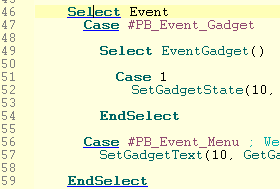
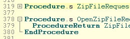
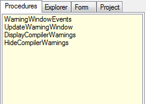
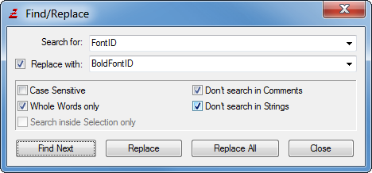
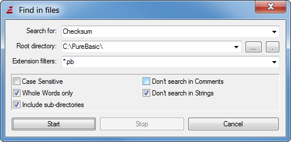

Editing features
The PureBasic IDE acts like any other Text Editor when it comes to the basic editing features.
The cursor keys as well as Page Up/Page Down, Home and End keys can be used to navigate through the code.
Ctrl+Home navigates to the beginning of the file and Ctrl+End to the End.
The default shortcuts Ctrl+C (copy), Ctrl+X (cut) and Ctrl+V (paste) can be used for editing.
The "Insert" key controls whether text is inserted or overwritten. The Delete key does a forward delete.
Holding down the Shift key and using the arrow keys selects text.
Furthermore, the IDE has many extra editing features specific to programming or PureBasic.
Indentation:
When you press enter, the indentation (number of space/tab at the beginning of the line) of the current
and next line will be automatically corrected depending on the keywords that exist on these lines.
A "block mode" is also available where the new line simply gets the same indentation as the previous one.
The details of this feature can be customized in the preferences.
Tab characters:
By default, the IDE does not insert a real tab when pressing the Tab key, as many
programmers see it as a bad thing to use real tabs in source code.
It instead inserts two spaces. This behavior can be changed in the Preferences.
See Customizing the IDE for more information.
Special Tab behavior:
When the Tab key is pressed while nothing or only a few characters are selected,
the Tab key acts as mentioned above (inserting a number of spaces, or a real tab if
configured that way).
However when one or more full lines are selected, the reaction is
different. In that case at the beginning of each selected line, it will insert spaces or
a tab (depending on the configuration). This increases the indentation of the whole selected block.
Marking several lines of text and pressing Shift+Tab reverses this behavior. It removes
spaces/tabs at the start of each line in order to reduce the indentation of the whole block.
Indentation/Alignment of comments:
Similar to the special tab behavior above, the keyboard shortcuts Ctrl+E and Ctrl+Shift+E
(CMD+E and CMD+Shift+E on OSX) can be used to change the indentation of only the comments
in a selected block of code. This helps in aligning comments at the end of code lines to
make the code more readable. The used shortcut can be configured in the
preferences.
Selecting blocks of code:
The shortcut Ctrl+M (CMD+M on OSX) can be used to select the block of code that
contains caret position (i.e. the surrounding If block, loop or procedure).
Repeated usage of the shortcut selects further surrounding code blocks.
The shortcut Ctrl+Shift+M (CMD+Shift+M on OSX) reverses the behavior and reverts the
selection to the block that was selected before the last usage of the Ctrl+M shortcut.
The used shortcuts can be configured in the preferences.
Double-clicking on source text:
Double-clicking on a word selects the whole word as usual. However in some cases,
double-clicking has a special meaning:
When double-clicking on the name of a procedure that is defined in the current
source while holding down the Ctrl Key, the cursor automatically jumps to the declaration of this procedure.
When double-clicking on an IncludeFile or
XincludeFile statement, the IDE will
try to open that file. (This is only possible if the included file is written
as a literal string, and not through for example a constant.)
In the same way, if you double-click on an IncludeBinary statement, the IDE will
try to display that file in the internal file viewer.
Marking of matching Braces and Keywords:

When the cursor is on an opening or closing brace the IDE will highlight the other brace that matches it. If a
matching brace could not be found (which is a syntax error in PureBasic) the IDE will highlight the current
brace in red. This same concept is applied to keywords. If the cursor is on a Keyword such as "If", the IDE
will underline this keyword and all keywords that belong to it such as "Else" or "EndIf". If there is a mismatch
in the keywords it will be underlined in red. The "Goto matching Keyword" menu entry described below can be
used to quickly move between the matching keywords.
The brace and keyword matching can be configured in the Preferences.
Command help in the status bar:
While typing, the IDE will show the needed parameters for any PureBasic function
whose parameters you are currently typing. This makes it easy to see any more
parameters you still have to add to this function. This also works for procedures,
prototypes, interfaces or
imported functions in your code as long as they are declared in the same source
code or project.
Folding options:

When special folding keywords are encountered (Procedure / EndProcedure by default.
More can be added), the IDE marks the region between these keywords on the left side
next to the line numbers with a [-] at the starting point, followed by a vertical line to the end point.
By clicking on the [-], you can hide ("fold") that section of source code to keep a better
overview of larger source files. The [-] will turn into a [+]. By clicking again, the code will
again be shown ("unfolded") again.
Note: Even though the state of these folded code lines is remembered when you save/reopen the file,
the actual created code file always contains all lines. This only affects the display of the code
in the IDE, not the code itself.
Another default fold keyword is ";{" and ";}". Since ";" marks a comment in PB, these will be
totally ignored by the compiler. However, they provide the possibility to place custom fold
points that do not correspond to a specific PB keyword.
Auto complete:

So that you do not have to remember the exact name of every command, there is the Auto complete
feature to make things easier.
After you have typed the beginning of a command, a list of possible matches to the word start
you have just typed will be displayed. A list of options is also displayed when you typed a
structured variable or interface followed by a "\".
You can then select one of these words with the up/down keys and insert it at the point you
are by pressing the Tab key. You can also continue typing while the list is open. It will select the
first match that is still possible after what you typed, and close automatically when either
you have just typed an exact match or if there are no more possible matches in the list.
Escape closes the auto complete list at any time. It also closes if you click with the mouse
anywhere within the IDE.
Note: You can configure what is displayed in the Auto complete list, as well as turning off the
automatic popup (requiring a keyboard shortcut such as Ctrl+Space to open list) in the
Preferences.
See the Auto complete section of Customizing the IDE for more information.
Tools Panel on the side:

Many tools to make navigating/editing the source code easier can be added to the Tools Panel
on the side of the editor window. For an overview of them and how to configure them,
see Built-in Tools.
The Edit Menu:
Following is an explanation of the Items in the Edit menu. Note that many of the Edit
menu items are also accessible by right clicking on the source code, which opens a popup menu.

Undo
Undoes the last done action in the code editing area. There is an undo buffer,
so several actions can be undone.
Redo
Redo the last action undone by the undo function.
Cut
Copy the selected part of the source code to the clipboard and remove it from the code.
Copy
Copy the selected text to the Clipboard without deleting it from the code.
Paste
Insert the content of the Clipboard at the current position in the code. If any text is
selected before this, it will be removed and replaced with the content of the Clipboard.
Insert comments
Inserts a comment (";") before every line of the selected code block. This makes
commenting large blocks of code easier than putting the ; before each line manually.
Remove comments
Removes the comment characters at the beginning of each selected line. This reverts the
"Insert comments" command, but also works on comments manually set.
Format indentation
Reformats the indentation of the selected lines to align with the code above them and to
reflect the keywords that they contain. The rules for the indentation can be specified in the
preferences.
Select all
Selects the whole source code.
Goto
This lets you jump to a specific line in your source code.
Goto matching Keyword
If the cursor is currently on a keyword such as "If" this menu option jumps directly to the keyword
that matches it (in this case "EndIf").
Goto recent line
The IDE keeps track of the lines you view. For example if you switch to a different line
with the above Goto function, or with the Procedure Browser tool. With this menu option
you can jump back to the previous position. 20 such past cursor positions are remembered.
Note that this only records greater jumps in the code. Not if you just move up/down a few
lines with the cursor keys.
Toggle current fold
This opens/closes the fold point in which the cursor is currently located.
Toggle all Folds
This opens/closes all fold points in the current source. Very useful to for example hide
all procedures in the code. Or to quickly see the whole code again when some of the code is folded.
Add/Remove Marker
Markers act like Bookmarks in the source code. There presence is indicated by a little arrow
next to the line numbers. You can later jump to these markers with the "Jump to marker" command.
The "Add/Remove Marker" sets or removes a marker from the current line you are editing.
Note: You can also set/remove markers by holding down the Ctrl Key and clicking on the border that
holds the markers (not the Line-number part of it).
Jump to Marker
This makes the cursor jump to the next marker position further down the code from the current
cursor position. If there is no marker after the cursor position, it jumps to the first on in the
source code. So by pressing the "Jump to Marker" shortcut (F2 by default) several times, you can
jump to all the markers in the code.
Clear Markers
This removes all markers from the current source code.
Find/Replace

The find/replace dialog enables you to search for specific words in your code, and
also to replace them with something else.
The "Find Next" button starts the search. The search can be continued after a match is found with the
Find Next menu command (F3 by default).
You can make the search more specific by enabling one of the checkboxes:
Case Sensitive : Only text that matches the exact case of the search word will be found.
Whole Words only : Search for the given word as a whole word. Do not display results where the search word is part of another word.
Don't search in Comments : Any match that is found inside a comment is ignored.
Don't search in Strings : Any match that is found inside a literal string (in " ") is ignored.
Search inside Selection only : Searches only the selected region of code. This is really useful
only together with the "Replace All" button, in which case it will replace any found match, but only inside the selected region.
By enabling the "Replace with" checkbox, you go into replace mode. "Find Next" will still only search, but
with each click on the "Replace" button, the next match of the search word will be replaced by whatever is
inside the "Replace with" box.
By clicking on "Replace All", all matches from the current position downwards will be replaced
(unless "Search inside Selection only" is set).
Find Next
This continues the search for the next match of the last search started by the Find/Replace dialog.
Find in Files

The Find in Files Dialog lets you carry out a search inside many files in a specific directory.
You have to specify a search keyword, as well as a base directory ("root directory") in which to
search. You can customize the searched files by specifying extension filters.
Any number of filters can be given separated by ",". (*.* or an empty extension field searches all files).
As with "Find/Replace", there are checkboxes to make the search more specific.
The "Include sub-directories" checkbox makes it search (recursively) inside any subdirectory of the given root directory too.
When starting the search, a separate window will be opened displaying the search results, giving the file,
line number as well as the matched line of each result.
Double-clicking on an entry in the result window opens
that file in the IDE and jumps to the selected result line.